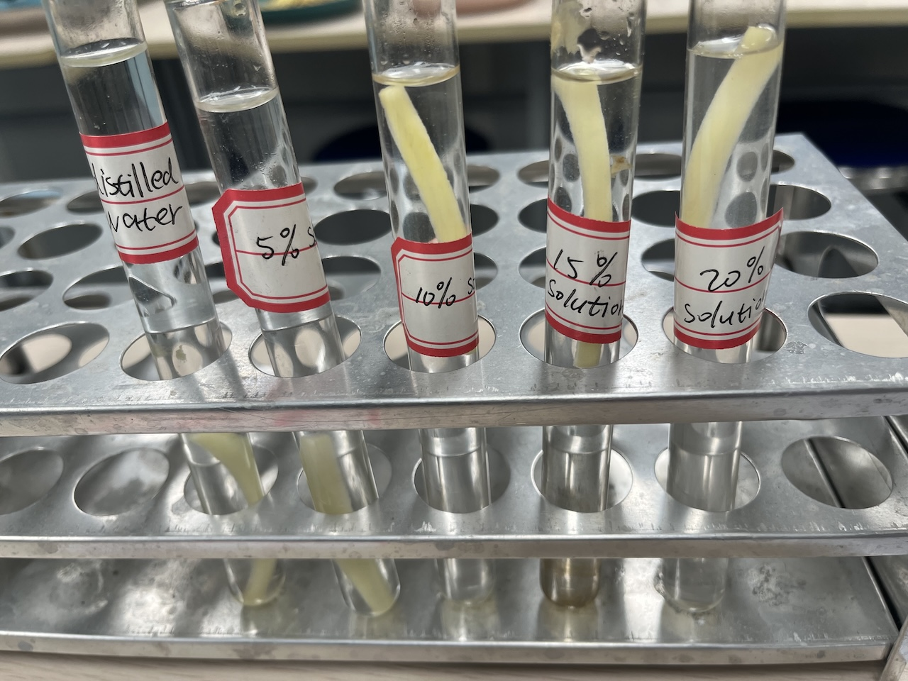
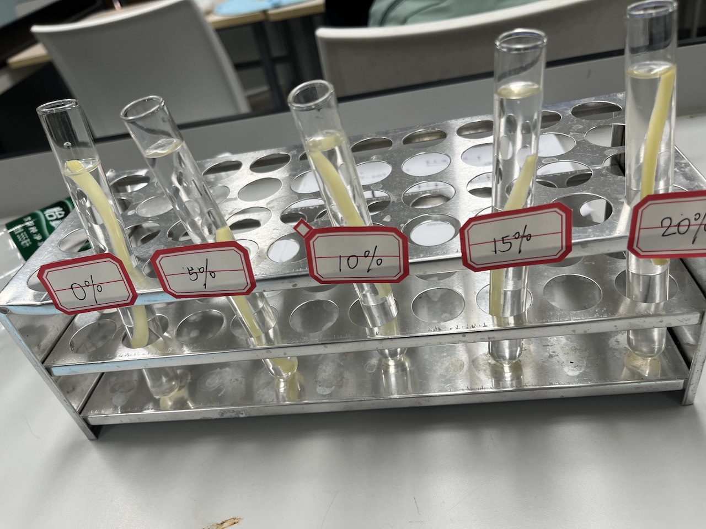
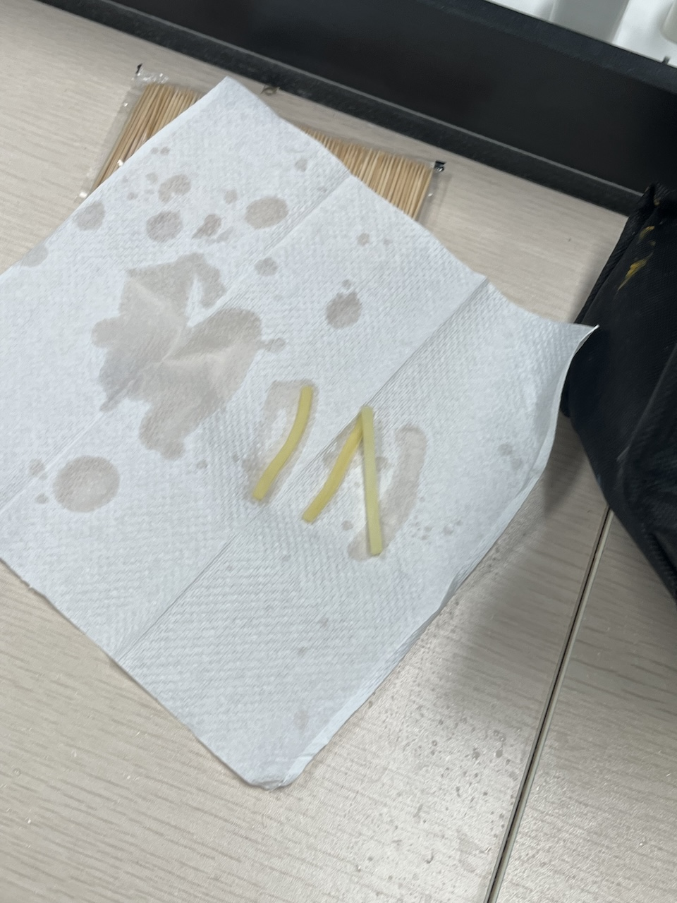
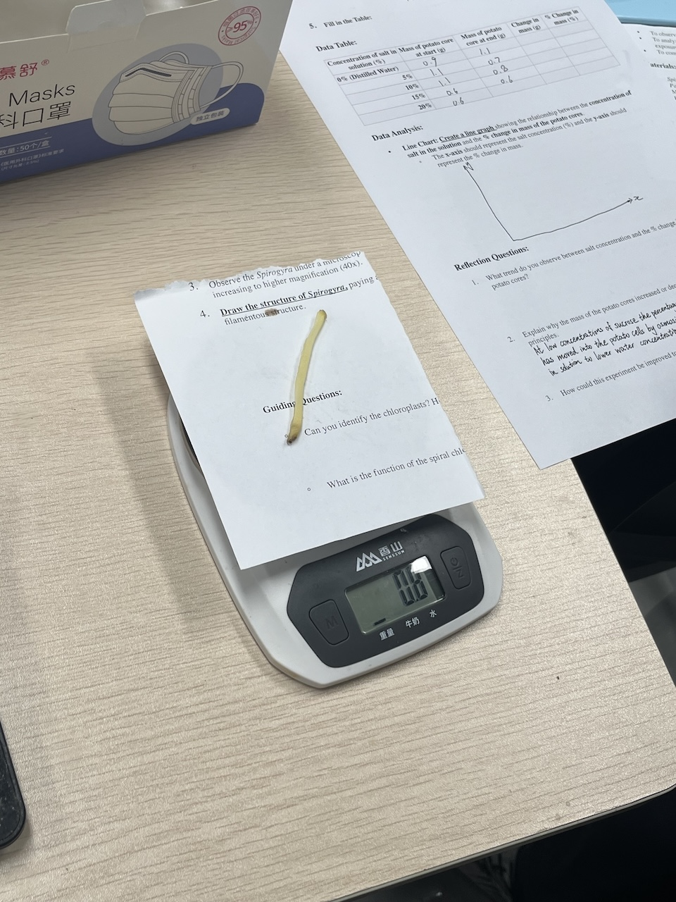

Objective: To investigate the effect of salt concentrations on the mass of potato cores
The following materials are needed for this experiment:
• Potato cores
• Potato cores
• Distilled water
• Salt (NaCl)
• Beakers or test tubes
• Timer
• Paper towels
First we need to measure and record the mass of the potato cores and prepare 5 different solutions with varying salt concentrations, then, we need to put each potato core into the different solutions
 Then we need to wait for 30 minutes…
After 30 minutes, take the potato core out, use a tissue to absorb the extra water on the surface, then measure and record the mass.
 Now we compare the mass of these potato cores with the initial mass and also with the other potato cores that have been put into different solutions.
The mass of the potato chips decreases when being put in salt water and increases when being put in distilled water, as the concentration of the salt water increases, the change in mass of the potato decreases. This is because the potato cell is shrinking in salt water-- a hypertonic solution, and swelling in distilled water-- a hypotonic solution